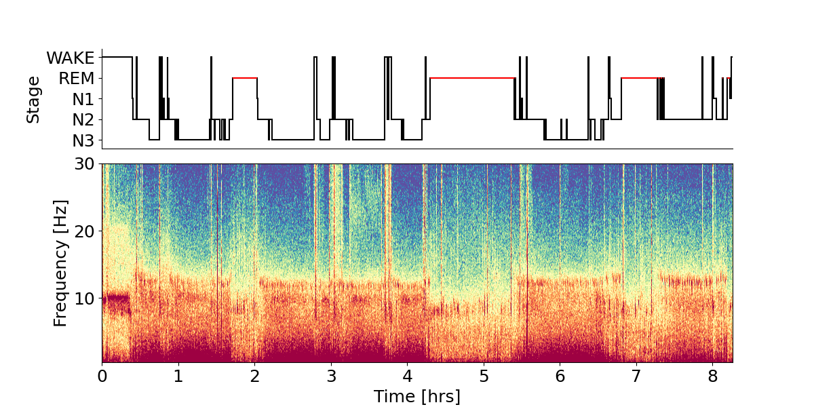
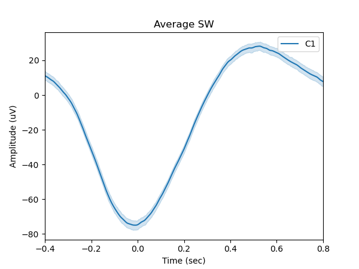
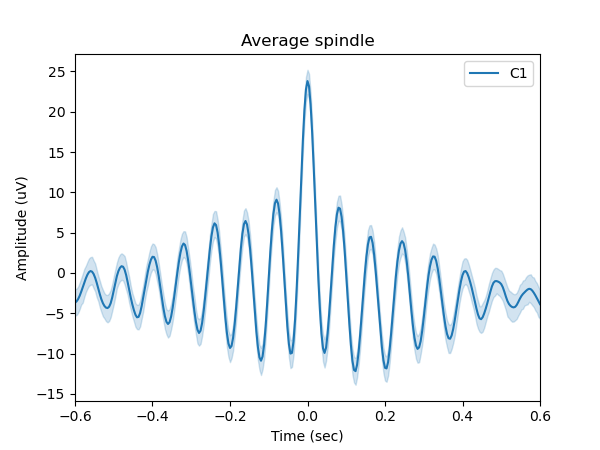

Sleep EEG Analysis
Modern sleep science is strongly informed by ExG biosensors that record brain activity, eye-movement activity, and muscle activity. These modalities are usually referred to as electroencephalography (EEG), electrooculography (EOG), and electromyography (EMG).
This guide demonstrates how EEG data recorded during a full night of sleep with Mentalab Explore can be analysed with the free and open-source YASA toolbox. The workflow includes automatic sleep staging with the YASA classifier [1], EEG band-power inspection, slow-wave detection, and sleep-spindle detection. The application example follows the YASA notebooks.
Data acquisition
A volunteer recorded sleep with an 8-channel Mentalab Explore device. The following montage was used:
| Channel | Type | Electrode | Position |
|---|---|---|---|
0 |
REF |
adhesive |
TP10, right mastoid |
1 |
EOG |
adhesive |
Above right eye |
2 |
EOG |
adhesive |
Outer canthus, right eye |
3 |
EMG |
adhesive |
Submental, below chin |
4 |
EEG |
dry |
O2 |
5 |
EEG |
dry |
C2 |
6 |
EEG |
dry |
F2 |
7 |
EEG |
adhesive |
C1 |
8 |
EEG |
wet |
Fc1 |
Clip cables were used to connect to adhesive and dry electrodes. Dry electrodes use flexible brushes to establish contact.
Impedances were not lowered after positioning the electrodes. Refer to the
Sleep Recording Protocol
for detailed recommendations on preparation, data transfer, and conversion of the recorded BIN file to .csv or .bdf files.
Sleep data analysis
Software preparation
First, prepare a conda virtual Python environment for the project.
-
Install Anaconda:
-
Create a virtual Python environment using conda:
conda create -n myenv python=3.10 -
Activate the conda environment:
conda activate myenv -
Install the required packages:
pip install numpy mne yasa
Data processing
Load the required Python packages.
import mne
import yasa
import numpy as np
import matplotlib.pyplot as pltNext, load the .csv file containing the sleep data recorded with Mentalab Explore and convert it to an MNE raw data object.
The example expects data recorded at 250 Hz with an 8-channel device. Note that MNE expects data in volts (V), whereas Mentalab Explore stores data in microvolts (µV).
ch_names = ['EOG-above', 'EOG-canthus', 'EMG-chin', 'Dry-O2', 'Dry-C2', 'Dry-F2', 'Sticky-C1', 'Wet-Fc1']
data = np.loadtxt("./data/wiki-sleep-analysis-data/Mentalab-sleep-analysis_ExG.csv", skiprows=1, delimiter=',').transpose()[1:9]
sf = 250
ch_types = ["eog", "eog", "emg", "eeg", "eeg", "eeg", "eeg", "eeg"]
info = mne.create_info(ch_names=ch_names, sfreq=sf, ch_types=ch_types)
raw = mne.io.RawArray(data, info)
raw.apply_function(lambda x: x * 1e-6) # scale muV to VApply a band-pass filter with a low cutoff of 0.1 Hz and a high cutoff of 40 Hz.
raw.filter(0.1, 40) # Apply a bandpass filter from 0.1 to 40 HzDetecting sleep stages
Next, apply the YASA sleep stage classification algorithm [1]. The only required input is one EEG channel. The algorithm can also receive one EOG channel, one EMG channel, participant age, and participant sex, but these inputs are optional. The EEG channel accounts for most of the classifier performance [1].
sls = yasa.SleepStaging(raw, eeg_name="Sticky-C1")
y_pred = sls.predict() # Get the predicted sleep stages
hypno = yasa.Hypnogram(y_pred) # Getting a hypnogram for later
hypno_int = yasa.hypno_str_to_int(y_pred)
hypno_up = yasa.hypno_upsample_to_data(hypno=hypno_int, sf_hypno=(1/30), data=data, sf_data=sf)Inspecting band power
Sleep stages are typically associated with activity in specific EEG frequency bands. N3 sleep is defined by slow waves in the delta band, while REM sleep is associated with increased alpha-frequency power.
The following code computes relative power for the sleep stages Wake, N1, N2, N3, and REM across common frequency bands.
data_filt = raw.get_data() * 1e6
data_c1_uV = data_filt[6]
bandpower_stages = yasa.bandpower(data_c1_uV, sf=100, win_sec=4, relative=True, hypno=hypno_up, include=(0, 1, 2, 3, 4))
bandpower_avg = bandpower_stages.groupby('Stage')[['Delta', 'Theta', 'Alpha', 'Sigma', 'Beta', 'Gamma']].mean()
bandpower_avg.index = ['Wake', 'N1', 'N2', 'N3', 'REM']Inspecting the relative band power shows increased delta and decreased theta activity in N3 sleep compared with wakefulness. Alpha activity is increased in N1 and REM sleep compared with deeper N2 and N3 sleep stages.
print(bandpower_avg) Delta Theta Alpha Sigma Beta Gamma
Wake 0.689047 0.252754 0.041008 0.013561 0.003619 0.000011
N1 0.805558 0.156776 0.026298 0.008975 0.002385 0.000009
N2 0.860466 0.122272 0.011644 0.004467 0.001142 0.000010
N3 0.934785 0.058335 0.004424 0.001922 0.000521 0.000014
REM 0.848217 0.115585 0.025746 0.008503 0.001937 0.000010Spectrogram and hypnogram
A hypnogram is a visual representation of sleep stages over the course of the night. In Figure 1, the hypnogram is combined with a spectrogram showing frequency content over time.
The hypnogram shows a typical pattern, with deeper sleep stages in the first half of the night and longer REM stages in the second half. The spectrogram shows power in frequency bands associated with the corresponding sleep stages.
| Clinical sleep recordings are usually scored by trained professionals according to the AASM guidelines. The hypnogram shown here is based on automatic sleep detection from the classifier. |
fig = yasa.plot_spectrogram(data_c1_uV, sf, hypno=hypno_up, fmax=30, cmap='Spectral_r', trimperc=5)
fig.show()
Figure 1. Hypnogram derived from sleep stage classification with the YASA classifier. The spectrogram shows the frequency content of the corresponding electrode over time. Data were recorded using Mentalab Explore.
Slow wave and sleep spindles detection
Slow waves are a hallmark of N3 sleep, also known as slow-wave sleep. With frequencies between 0.5 Hz and 3 Hz, they are part of the delta frequency band.
The YASA toolbox provides a slow wave detection algorithm, based on previous work [2] [3], that can be used to inspect individual and averaged slow waves.
Calling the slow wave summary function provides an overview of the timing and properties of the detected slow waves.
sw = yasa.sw_detect(data_c1_uV, sf, hypno=hypno_up)
sw.summary() Start NegPeak MidCrossing PosPeak End Duration ValNegPeak ValPosPeak PTP Slope Frequency Stage Channel IdxChannel
0 1579.324 1579.600 1579.860 1580.076 1580.400 1.076 -110.009728 70.868551 180.878280 695.685692 0.929368 2 CHAN000 0
1 1833.080 1833.328 1833.560 1833.844 1834.144 1.064 -43.119826 50.537236 93.657062 403.694232 0.939850 2 CHAN000 0
2 1834.144 1834.452 1834.736 1834.896 1835.060 0.916 -64.484388 26.909410 91.393798 321.809148 1.091703 2 CHAN000 0
3 1895.844 1896.224 1896.560 1896.808 1897.060 1.216 -55.624535 42.378489 98.003024 291.675667 0.822368 2 CHAN000 0
4 1935.872 1936.280 1936.700 1936.832 1936.984 1.112 -83.590539 10.574031 94.164569 224.201355 0.899281 2 CHAN000 0
.. ... ... ... ... ... ... ... ... ... ... ... ... ... ...
966 29275.144 29275.496 29275.784 29276.000 29276.756 1.612 -123.916814 68.232216 192.149031 667.184134 0.620347 2 CHAN000 0
967 29276.756 29277.024 29277.292 29277.484 29277.780 1.024 -80.189417 37.322052 117.511469 438.475632 0.976562 2 CHAN000 0
968 29351.656 29351.996 29352.252 29352.468 29352.712 1.056 -80.538877 63.521518 144.060395 562.735919 0.946970 2 CHAN000 0
969 29353.720 29354.168 29354.448 29354.660 29354.980 1.260 -60.494303 36.531033 97.025336 346.519058 0.793651 2 CHAN000 0
970 29444.048 29444.400 29444.704 29444.924 29445.248 1.200 -166.011564 85.047673 251.059236 825.852751 0.833333 2 CHAN000 0Figure 2 shows the average slow wave, computed from 971 detected slow wave events.
sw.plot_average(time_before=0.4, time_after=0.8, center="NegPeak");
plt.legend(['C1'])
plt.show()
Figure 2. Average of the slow waves detected by the YASA toolbox. Data were recorded using Mentalab Explore.
Sleep spindles are short oscillatory bursts that typically occur during N2 sleep and fall in the frequency range between 11 Hz and 16 Hz.
Using the same workflow as before, run the spindle detection algorithm, based on previous work [4]. Calling the sleep spindle summary function provides an overview of the timing and properties of the detected sleep spindles.
sp = yasa.spindles_detect(data_c1_uV, sf)
sp.summary() Start Peak End Duration Amplitude RMS AbsPower RelPower Frequency Oscillations Symmetry Channel IdxChannel
0 8.720 8.864 9.396 0.676 56.961351 11.090094 2.100221 0.322695 11.315217 8.0 0.211765 CHAN000 0
1 53.476 53.532 54.152 0.676 147.736709 28.034810 2.648341 0.305501 12.936249 8.0 0.082353 CHAN000 0
2 1399.952 1400.424 1400.636 0.684 58.795353 11.988885 1.960096 0.266393 13.047958 8.0 0.686047 CHAN000 0
3 1444.672 1444.860 1445.176 0.504 49.023655 11.592732 2.043340 0.243198 13.838615 7.0 0.370079 CHAN000 0
4 1496.024 1496.072 1496.672 0.648 37.978448 10.030894 1.689857 0.238392 13.444519 8.0 0.073620 CHAN000 0
.. ... ... ... ... ... ... ... ... ... ... ... ... ...
519 29412.916 29413.096 29413.660 0.744 37.617005 8.592611 1.851378 0.323409 12.606909 8.0 0.240642 CHAN000 0
520 29418.196 29419.088 29419.892 1.696 73.779483 14.525022 2.380002 0.519697 12.552197 21.0 0.524706 CHAN000 0
521 29423.800 29425.016 29425.484 1.684 58.250863 11.203151 1.982496 0.389862 12.449155 21.0 0.720379 CHAN000 0
522 29451.216 29452.136 29452.268 1.052 46.337193 10.750559 2.002255 0.438899 12.765855 13.0 0.871212 CHAN000 0
523 29467.156 29467.684 29468.148 0.992 49.976640 9.770195 1.971178 0.429425 12.662866 12.0 0.530120 CHAN000 0Figure 3 shows the average sleep spindle, computed from 524 detected spindle events.
sp.plot_average(time_before=0.6, time_after=0.6);
plt.legend(['C1'])
plt.show()
Figure 3. Average of the sleep spindles detected by the YASA toolbox. Data were recorded using Mentalab Explore.
Closing words
Whether used for controlled laboratory research, in-home sleep studies, or sleep monitoring applications, Mentalab Explore can provide research-grade ExG data and an efficient workflow for extracting sleep-related insights.
For previous applications of Mentalab Explore in sleep science, see Biller et al. [5], who conducted a longitudinal sleep study, and Hainke et al. [6], who investigated gamma oscillations and consciousness during sleep using steady-state visually evoked potentials (SSVEPs).
For more information or support, contact support@mentalab.com.
References
-
[1] Vallat, R., & Walker, M. P. (2021). An open-source, high-performance tool for automated sleep staging. eLife, 10, e70092. https://doi.org/10.7554/eLife.70092
-
[2] Carrier, J., Viens, I., Poirier, G., Robillard, R., Lafortune, M., Vandewalle, G., Martin, N., Barakat, M., Paquet, J., & Filipini, D. (2011). Sleep slow wave changes during the middle years of life. European Journal of Neuroscience, 33(4), 758–766. https://doi.org/10.1111/j.1460-9568.2010.07543.x
-
[3] Massimini, M., Huber, R., Ferrarelli, F., Hill, S., & Tononi, G. (2004). The Sleep Slow Oscillation as a Traveling Wave. Journal of Neuroscience, 24(31), 6862–6870. https://doi.org/10.1523/JNEUROSCI.1318-04.2004
-
[4] Lacourse, K., Delfrate, J., Beaudry, J., Peppard, P., & Warby, S. C. (2019). A sleep spindle detection algorithm that emulates human expert spindle scoring. Journal of Neuroscience Methods, 316, 3–11. https://doi.org/10.1016/j.jneumeth.2018.08.014
-
[5] Biller, A. M., Fatima, N., Hamberger, C., Hainke, L., Plankl, V., Nadeem, A., Kramer, A., Hecht, M., & Spitschan, M. (2024). The Ecology of Human Sleep (EcoSleep) Project: Protocol for a longitudinal cohort repeated-measurement-burst study to assess the relationship between sleep determinants and sleep outcomes under real-world conditions across time of year. medRxiv. https://doi.org/10.1101/2024.02.09.24302573
-
[6] Hainke, L., Herberger, S., Taylor, P., & Dowsett, J. (2022). Studying Gamma oscillations and consciousness during sleep using SSVEPs. https://doi.org/10.13140/RG.2.2.35554.81609